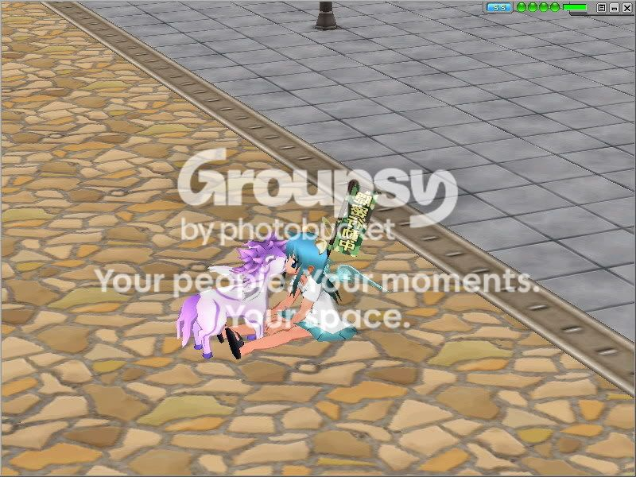
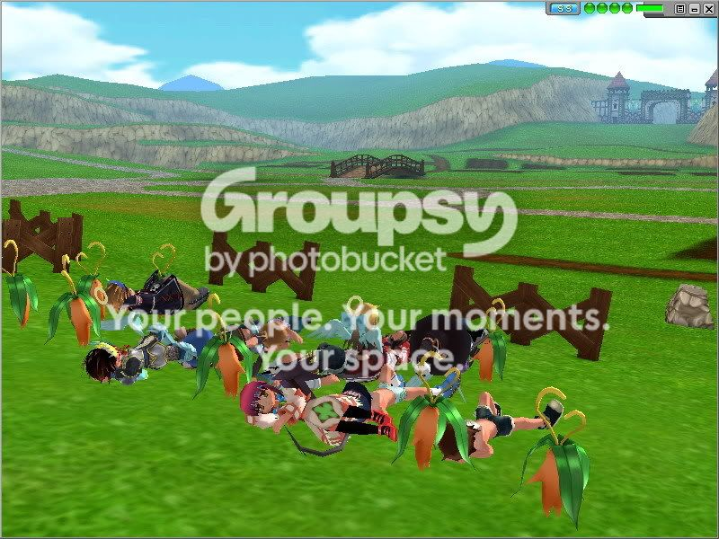

เฟิส : ฟ้าสวย อากาศดีจังเลยนะเฟย์ ไม่น่าเชื่อว่าจะเป็นวันสุดท้ายแล้ว
เฟย์ : ถึงจะเป็นวันสุดท้าย แต่ความทรงจำดีๆจะอยู่กะเราตลอดปายน๊า~

ถ่ายกะเพจัง (เพกาซัส) ที่เฟย์รบเร้าจะเอาให้ได้มาตั้งนานแล้วค่ะ

ขอบคุณน้องสคส.มากค่ะที่ยกเพจังให้เฟย์ น่ารักซ์ทั้งคนทั้งม้าเลย ๐> <๐

นักดนตรีหน้าใหม่ ฝีมือไม่เอาไหน แต่คนรอบข้างเก๊าะแดนซ์กระจายนะคะ ^ ^

หลังทำผมทรงใหม่ไฉไลกว่าเก่า~

ไม่รู้จะได้พบกันอีกเมื่อไหร่ แต่อยู่ใต้ฟ้าเดียวกัน ซักวันคงได้เจอ

รักซ์ทุกคนมากๆค่ะ ทั้ง เฟิส เฟรนด์ เฟิร์น ไอซ์จัง ยูจังทั้งสอง ริน พีท แป้ง ส้ม ป๊ะป๋า หมิง หนอน โอ๊ตต๋า ตง แป๋ง ปลา ป้า เอ ไกด์ เติ้ล และคนอื่นๆที่ไม่ได้เอ่ยชื่อทุกคนนะคะ
หลังงานเลี้ยงย่อมมีการลาจาก มันอาจจะเศร้าแต่ก็ทำให้เราได้เรียนรู้คุณค่าของ "ความรัก" และ "ความคิดถึง"

ลาก่อน ๐Fay๐ ขอบคุณน๊าที่อยู่เป็นเพื่อนเฟย์ทุกวัน (มีการเผาส่งวิญญาณก่อนรีด้วยล่ะ o_O)

เฟิส : ฟ้ายังสวยเหมือนเดิมไม่เปลี่ยนเลย ไม่รู้ว่าเมื่อไหร่จะได้มานั่งมองท้องฟ้าด้วยกันอีกเนอะ
เฟย์ : บอกแล้วไงคะเฟิส ถึงจะเป็นวันสุดท้าย แต่คงไม่ใช่สุดท้ายของมิตรภาพหรอกนะ
พบกันใหม่ AMS ทุกคน ถึงจะเป็นเวลาสั้นๆ แต่ทุกวันที่ได้เล่น ได้คุย เก็บเวลด้วยกัน ทำให้เฟย์มีความสุขมากๆเลย
ขอบคุณ ECO ที่ทำให้ค่ำคืนเหงาๆของเฟย์มีเสียงหัวเราะ และความทรงจำดีๆตลอดมา
I LOVE ECO!!~~